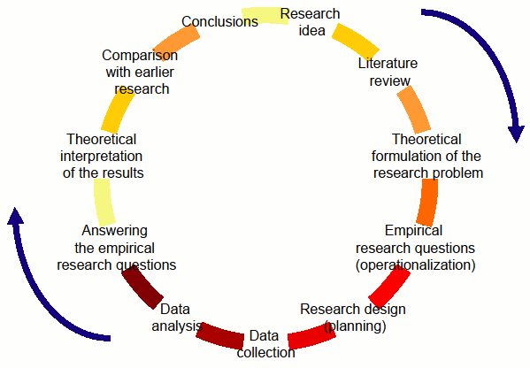
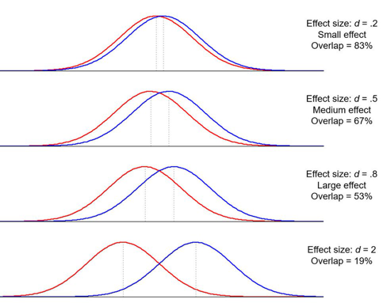
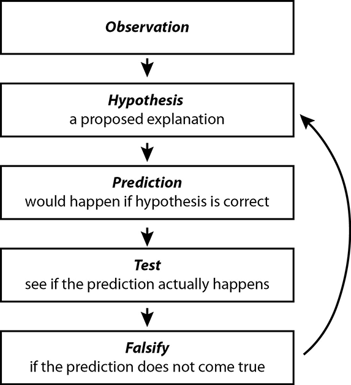

Introduction
Contents
1. Introduction¶
1.1. NSCI 801 - Quantitative Neuroscience¶
Gunnar Blohm
1.1.1. Outline¶
Why quantitative Neuroscience?
Course overview & materials
The research process
Study design
1.1.2. Why Quantitative Neuroscience?¶
We want to quantify observations
But data is corrupted by noise
Certain things are not directly observable (latent)
we need models!
Ultimately we want to identify causal relationships
1.1.3. Why Quantitative Neuroscience?¶
We want to quantify observations
questionnaires
measurements
But: such observations are variable…
1.1.4. Why Quantitative Neuroscience?¶
We want to quantify observations
But data is corrupted by noise
noise in the process / system
noise due to the measurement
noise due to A/D conversion
noise due to post-processing
Thus: we need ways to infer reality from noisy data
1.1.5. Why Quantitative Neuroscience?¶
We want to quantify observations
But data is corrupted by noise
Certain things are not directly observable (latent)
e.g. we cannot measure your thought process (yet), only the outcome!
e.g. we cannot measure inflammation, only the body’s reaction
we often want good “measures” of latent variables
Ultimately we want to identify causal relationships
Solution: we need models that causally link latent variables to measurable quantities
1.1.6. Course overview & materials¶
we will use Google Colab - you need a Google account!
all lecture materials will be in Python & Markdown
slides / tutorials will be shared on GitHub…
download code from Github into Colab: File>>Open Notebook>>Github…
1.1.7. for those interested…¶
Jupyter Notebook has a “slide” option that produces HTML5 slides
install Reveal.js - Jupyter/IPython Slideshow Extension (RISE)
But you don’t need any of this!
1.1.8. Course overview & materials¶
1.1.8.1. Goals of the course:¶
hands-on skills in signal processing, basic and advanced statistics, data neuroscience (machine learning) and model fitting methods
gain intuitive understanding of these topics
introduction to scientific programming in Python
familiarization with open science framework approaches
1.1.9. Course overview & materials¶
1.1.9.1. Specific topics:¶
intro to Python & Colab
signal processing
statistics and hypothesis testing
models & data neuroscience
causality, reproducibility, Open Science
1.1.10. The research process¶

1.1.11. The research process¶
1.1.11.1. Research design:¶
what is power?
what is effect size?
how to determine sample size?
1.1.12. The research process¶
1.1.12.1. Research design:¶
what is power?
Power calculations tell us how many samples are required in order to avoid a type I (false positive) or a type II (false negative) error
Typically in hypothesis testing, only type II errors are considered: For a type II error probability of \(\beta\), the corresponding statistical power is \(1 − \beta\)
1.1.13. The research process¶
1.1.13.1. Research design:¶
what is effect size?
Quantification of the difference between two groups
E.g. Cohen \(\color{grey}{d=\frac{\mu_1-\mu_2}{\sigma}}\)

1.1.14. The research process¶
1.1.14.1. Let’s play - effect size¶
import matplotlib.pyplot as plt
import numpy as np
import scipy.stats as stats
import math
plt.style.use('dark_background')
x = np.linspace(-5, 5, 200)
mu1 = -1
sigma = .2
plt.plot(x, stats.norm.pdf(x, mu1, sigma))
mu2 = .5
sigma = .2
plt.plot(x, stats.norm.pdf(x, mu2, sigma))
plt.show()
print("Effect size d =", abs((mu1-mu2)/sigma))
---------------------------------------------------------------------------
ModuleNotFoundError Traceback (most recent call last)
Input In [1], in <cell line: 1>()
----> 1 import matplotlib.pyplot as plt
2 import numpy as np
3 import scipy.stats as stats
ModuleNotFoundError: No module named 'matplotlib'
1.1.15. The research process¶
1.1.15.1. Let’s play - random samples¶
mu1 = -1
mu2 = 1
sigma = 1
N = 10 # number samples
s1 = np.random.normal(mu1, sigma, N)
s2 = np.random.normal(mu2, sigma, N)
plt.hist(s1, 30, density=True)
plt.hist(s2, 30, density=True)
plt.show()
1.1.16. The research process¶
1.1.16.1. Research design:¶
how to determine sample size? (aka power calculations)
you essentially simulate your statistical analysis
you need to make meaningful assumptions, e.g. group difference, variability, power
you want to know how many samples you need so that you can reliably identify the hypothesized effect
many tools available, e.g. G*Power, WebPower online, powerandsamplesize.com, …
for Python: StatsModels package
1.1.17. The research process¶
1.1.17.1. Research design - let’s compute sample size¶
This is for a repeated measures t-test…
from numpy import array
from statsmodels.stats.power import TTestIndPower
# from statsmodels.stats.power import TTestIndPower
# parameters for power analysis
effect_sizes = array([0.2, 0.5, 0.8])
sample_sizes = array(range(5, 100))
# calculate power curves from multiple power analyses
analysis = TTestIndPower() # or TTestIndPower for independent samples
analysis.plot_power(dep_var='nobs', nobs=sample_sizes, effect_size=effect_sizes)
plt.show()
What does this mean?
Power is the probability of rejecting the null hypothesis when, in fact, it is false.
Power is the probability of making a correct decision (to reject the null hypothesis) when the null hypothesis is false.
Power is the probability that a test of significance will pick up on an effect that is present.
Power is the probability that a test of significance will detect a deviation from the null hypothesis, should such a deviation exist.
Power is the probability of avoiding a Type II error.
Simply put, power is the probability of not making a Type II error
1.1.18. The research process¶
